Story Bible help guide
Keep track of the characters, places, relationships and timeline of your series.
1. Getting started and signing in
You can use Story Bible in two ways, and both show the same data:
- In Word as a task pane. Install it from the install page, then open it from the Home tab.
- In a browser at storybible.huscroft.com.au. No Word needed. The only things missing are the Word-only features: Find, linking a chapter to a Word document, and Insert name at cursor.
Click Sign in at the top and sign in with your Microsoft account in the window that opens. Your name and a Sign out button then appear in its place.
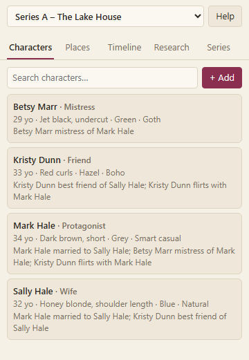
The first time you sign in, you are asked to accept the terms and the privacy policy before you can use the app. Read them with the links on that screen, then click Accept and continue. You are asked again only if the policy is updated.
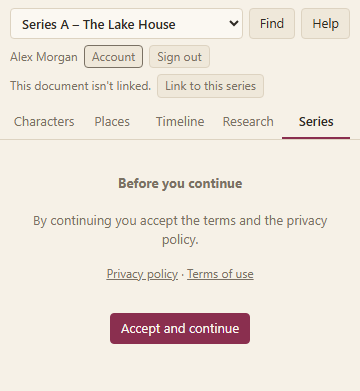
2. Setting up a series
Everything lives inside a series. The first time you open the app, click + New series and give it a name. Use the drop-down at the top to switch between series.
Open the Series tab to edit the series:
- Series name and Premise / notes.
- Default character fields: the extra fields every character gets, one per line. They start as Build, Skin, Tattoos, Piercings, Distinguishing marks, and Voice & mannerisms. Edit the list to suit your story.
- Chapters: type a number and title and click Add. In Word, you can link each chapter to the Word document it lives in, which makes Find and chapter links work.
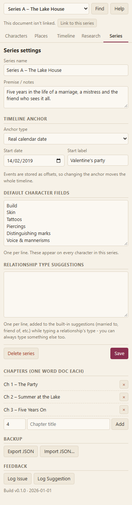
Click Save after changing the settings. Delete series removes the series and everything in it, so export a backup first if you are unsure.
3. Setting up the timeline
In the Series tab, under Timeline anchor, pick how your story measures time:
- Relative (no real dates): events are placed by how long after the start they happen, such as 2 years, 3 months. Good for fantasy and invented calendars.
- Real calendar date: choose a Start date and events show real dates.
Start label names the starting point (for example “Story start”). Events are stored as offsets from the anchor, so changing the anchor later moves the whole timeline with it.
4. Relationship types
When you add a relationship between two characters, the type box suggests these as you type:
married to, partner of, mistress of, lover of, ex of, friend of, best friend of, sibling of, parent of, boss of, colleague of, neighbour of, rival of, flirts with.
They are only suggestions. You can type anything you like. To add your own suggestions for a series (on top of the defaults above), add them under Relationship type suggestions in the Series tab (one per line, up to 200) and save.
5. Adding characters, places and timeline events
Use the Characters, Places and Timeline tabs. Each has an add button at the top; click an existing item to edit it. Only the name (or title) is required.
- Characters: name, role, aliases, age (a number), appearance, your series' custom fields, likes and limits, backstory and notes.
- Places: name, where it is, a description, and how it matters to the story.
- Timeline events: what happens, when (years, months and days from your timeline anchor), and details.
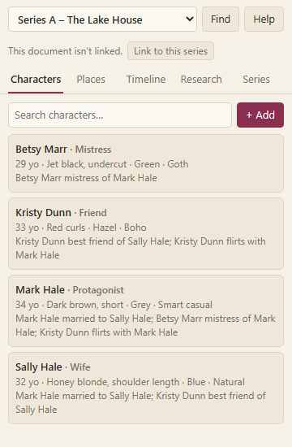
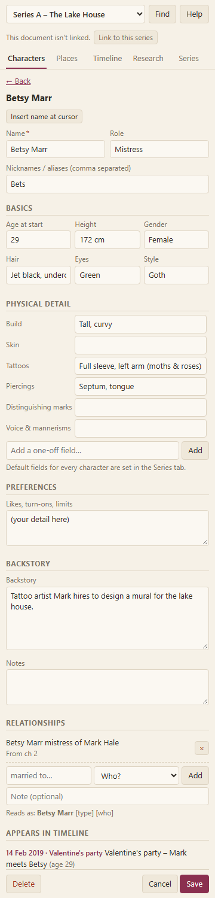
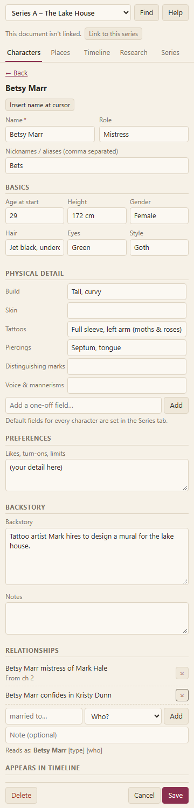
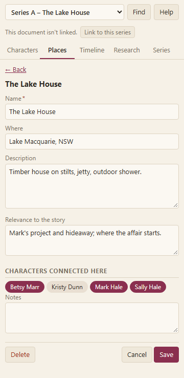
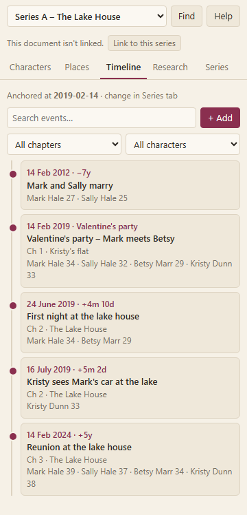
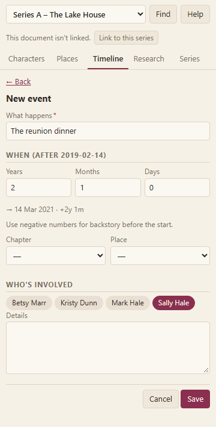
Remember to click Save. If you try to leave with unsaved changes, the app asks first.
6. Linking it all together
- Relationships: on a character, choose another character, a type, and click Add.
- Characters in a place or event: on a place or timeline event, click character names to switch them on or off.
- Research entries can link to characters, places and events the same way.
- Find (Word only): select a name in your manuscript and click Find to jump to that character or place.
7. Research entries
The Research tab is for notes you gather while writing. Each entry has a title, the date entered, an optional chapter, rich-text notes, and links to characters, places and timeline events.
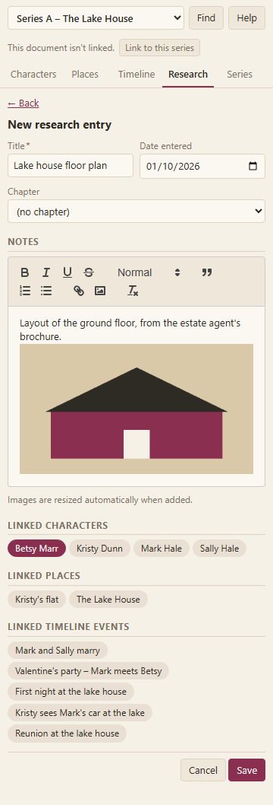
Images
You can paste, drag in, or insert pictures from the editor's image button.
- Allowed: PNG, JPEG, GIF and WebP. SVG is not accepted.
- Large images are shrunk automatically to at most 1600 pixels on the longest side.
- If an image is still bigger than about 2.6 MB after shrinking, it is skipped and a message tells you.
- An entry can hold about 8 million characters in total, and images count toward that, so a few photos are fine but dozens in one entry may not be. Split them over several entries.
8. Backing up and restoring
In the Series tab, under Backup:
- Export JSON downloads the current series as a file you can keep anywhere.
- Import JSON… loads a previously exported file back in.
The server also takes its own nightly backup, but an export of your own is the quickest way to protect a series before a big change.
9. Feedback and logging issues
In the Series tab, under Feedback, click Log Issue for something broken or Log Suggestion for an idea. Give it a title (3–120 characters) and a description (up to 4000). There is a limit of 5 reports per hour. The build version and date of the app are added to every report automatically, so we know which version you were using.
You can see the build version and date yourself at the bottom of the Series tab, under Feedback, and on the report form. Quote them if you contact us another way.
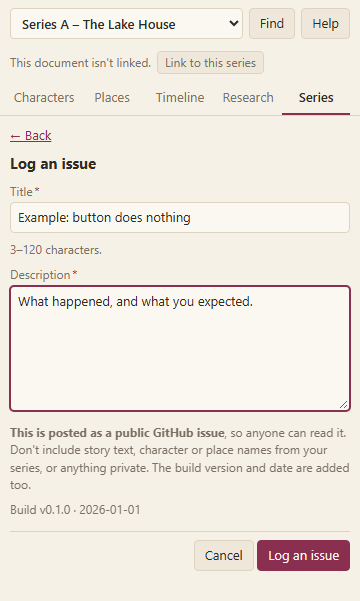
10. Your data and privacy
Your series belongs to you. You can download all of it at any time (see below) or one series at a time with Export JSON (see Backing up). Read the full privacy policy and terms of use. In the pane, they are linked at the bottom of your account page once you are signed in.
11. Downloading your data and deleting your account
When you are signed in, an Account button appears next to Sign out.
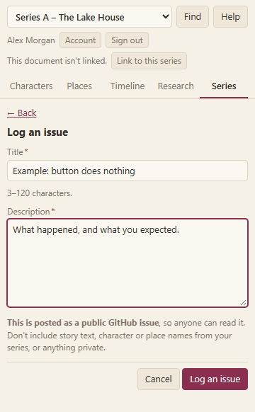
Click it to open your account page. The privacy policy and terms of use are linked at the bottom of this page.
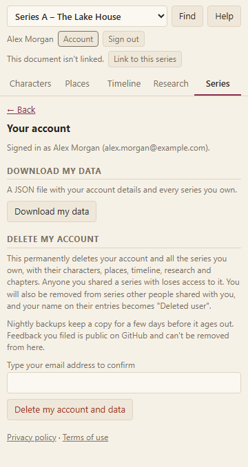
Download my data
Click Download my data to save a file containing your account details and every series you own. Do this first if you want to keep your work.
Delete my account
- Read what will happen. Deleting is permanent and takes effect immediately.
- Type your email address in the confirmation box.
- Click Delete my account and data. You are signed out straight away.
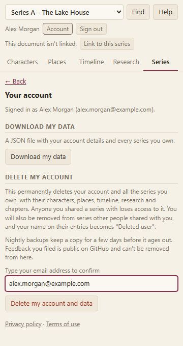
This deletes your account and every series you own, including characters, places, timeline, research and chapters. Anyone you shared a series with loses access to it. You are also removed from series other people shared with you, and your name on their entries is replaced by “Deleted user”.
Inactive accounts
If nobody signs in to your account for 24 months, it is deleted along with every series you own, just as if you had deleted it yourself. Before that we email you at 18, 20 and 23 months, if we have a usable email address for you. To keep your account, open the add-in in Word and sign in; that starts the 24 months again. To keep a copy of your work instead, use Download my data first.